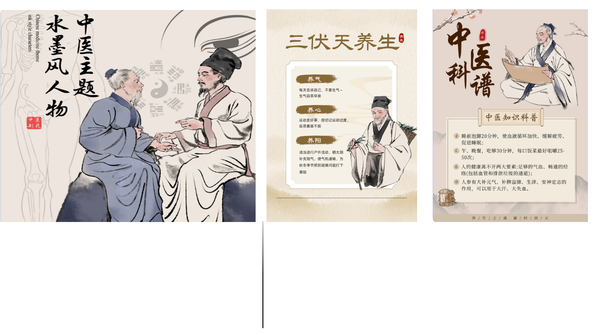

中药:
中药在中国古籍中通称“本草”。我国最早的一部中药学专著是汉代的
《神农本草经》，唐代由政府颁布的《新修本草》是世界上最早的药典。明代
李时珍的《本草纲目》，总结了16世纪以前的药物经验，对后世药物学的发展
做出了重大的贡献。
养生:
中药的分类：中药按照功效可以分为补益类、清热类、祛湿类、理气类等多种类型。不同类型的
中药适用于不同的人群和症状。
中药的使用注意事项：使用中药时需要注意剂量、用法和禁忌症等问题。建议在专业医生或中医师
的指导下使用中药，以确保安全有效。 总之，中药与养生是相辅相成的两个方面，通过合理地运用
中药可以达到更好的养生效果。